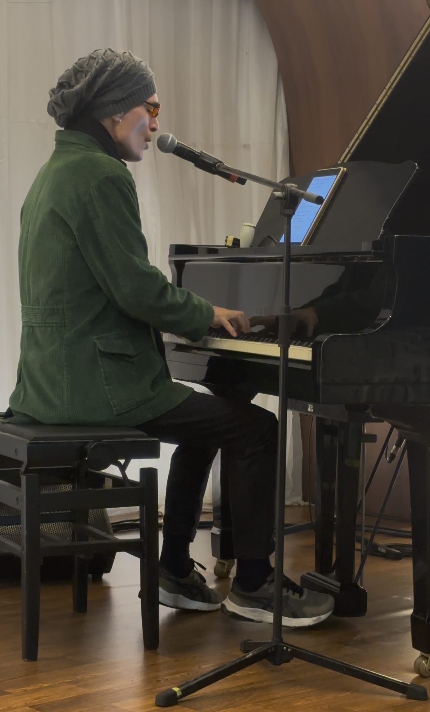
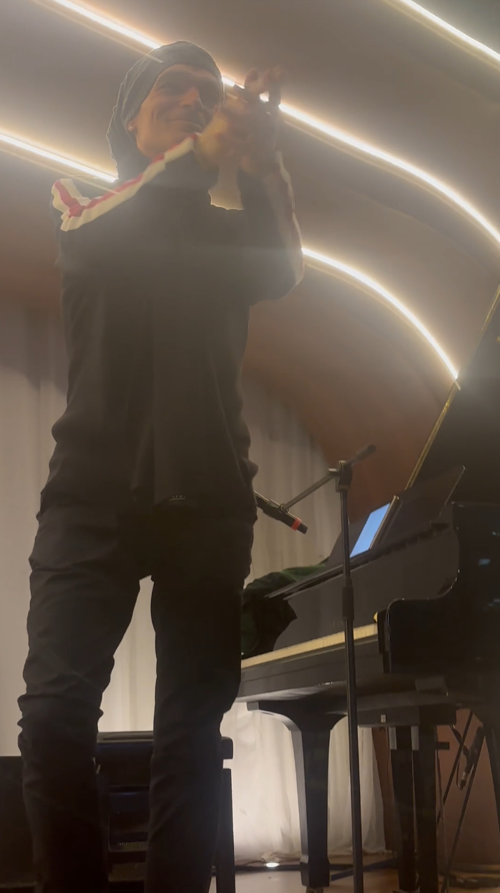
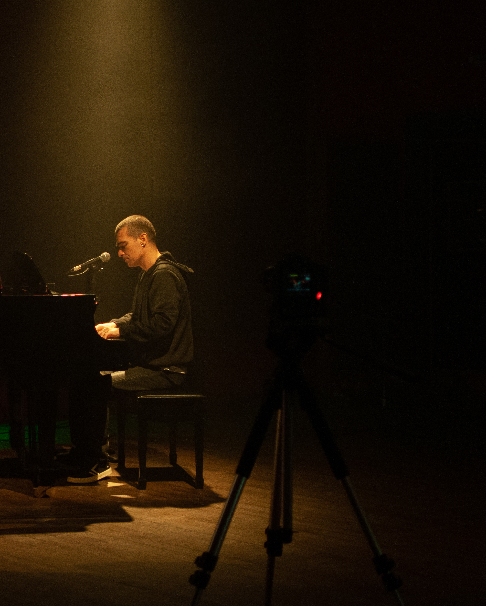

Concerto para voz, piano e paisagens sonoras
Rolar
O Concerto
Entre seu universo autoral e interpretações cuidadosamente escolhidas, Gê conduz o público por um percurso em que música, palavra e silêncio se articulam com naturalidade, revelando diferentes atmosferas e formas de escuta.
O resultado é um concerto cuidadosamente desenhado, em que cada escolha sonora nasce da própria canção. Piano, voz, guitarra, bass synth e discretas paisagens sonoras integram uma narrativa musical coesa, conduzindo o público por uma experiência de escuta atenta e sensível.
O palco antes do concerto
O Artista
Cantor, compositor, produtor musical e diretor artístico, Gê desenvolve um trabalho voltado à canção brasileira contemporânea, aproximando composição, interpretação e produção musical em uma linguagem autoral.
Em sua trajetória, assinou produções para diferentes artistas e lançou, ao lado de Ney Matogrosso, o álbum Canções Para Um Novo Mundo, trabalho que amplia sua pesquisa sobre a canção como espaço de encontro entre música, palavra e escuta.
Também integra a Rio Bronx, ao lado de Will Calhoun (Living Colour), Marcos Suzano e Marcelinho da Lua. A banda se apresenta no Rock in Rio 2026 e prepara o lançamento de seu primeiro single, gravado com a participação especial do guitarrista norte-americano Mike Stern.
Neste concerto, reúne essa experiência em uma apresentação construída a partir da escuta e da força narrativa de cada canção.


A escuta nas mãos
Percurso
Álbum lançado em parceria com Ney Matogrosso, pela Som Livre, reunindo composições autorais e interpretações que ampliam o diálogo entre tradição e contemporaneidade na canção brasileira.

Ney Matogrosso, Hecto & Guilherme Gê — Canções Para Um Novo Mundo
Projeto formado por Gê, Will Calhoun (Living Colour), Marcos Suzano e Marcelinho da Lua. A banda se apresenta no Rock in Rio 2026 e prepara o lançamento de seu primeiro single, gravado com a participação especial do guitarrista norte-americano Mike Stern.
Produziu o álbum A Delicadeza do Instante, da cantora japonesa Toyono, em uma produção remota Rio–Tóquio, com participações de Leila Pinheiro e Roberto Menescal.
Desde 2012, produz grande parte das músicas dos álbuns de Sérgio Britto (Titãs).
Entre produções, gravações e apresentações, trabalhou com nomes como Tom Zé, Frejat, Fernanda Abreu, Paulo Miklos, Paulinho Moska, Ana Cañas, Marcos Valle, Lenine, Roberto Menescal, Egberto Gismonti, Jards Macalé, Roberta Sá e Pepeu Gomes, entre outros.
Como compositor, possui parcerias com Paulo Sérgio Valle, Roberto Menescal, Vitor Ramil, Sérgio Britto, Mauro Santa Cecília e Allan Dias Castro.
Também participou da criação de trilhas sonoras originais para cinema, teatro e documentários, incluindo trabalhos com direção de Gerald Thomas.
Vídeos
Trailer Oficial
Apresentação do concerto
Trecho do Concerto
Registro ao vivo da apresentação




Contato
Cada escolha sonora nasce da própria canção.